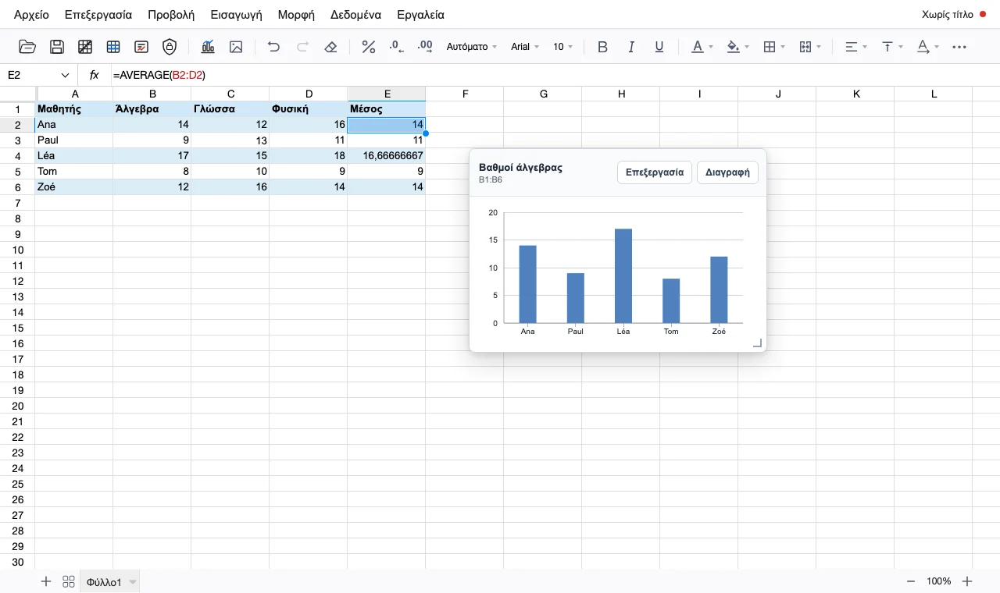

Εγχειρίδιο χρήσης του DocCells
Το DocCells είναι ένα πολύγλωσσο υπολογιστικό φύλλο που λειτουργεί στο πρόγραμμα περιήγησης, χωρίς εγκατάσταση ή λογαριασμό. Ανοίγει και αποθηκεύει βιβλία εργασίας Excel (.xlsx).

Τα βασικά σε έξι κινήσεις
| Για | Κάντε |
|---|---|
| Εισαγωγή | κλικ σε ένα κελί, πληκτρολόγηση, Enter (εισαγωγή δεδομένων) |
| Υπολογισμό | πληκτρολογήστε = και τον τύπο: =AVERAGE(B2:B6) (τύποι) |
| Αντιγραφή τύπου | σύρετε την μπλε λαβή της επιλογής, ή Ctrl D (συμπλήρωση) |
| Μορφοποίηση | μενού Μορφή, ή τα κουμπιά (μορφοποίηση) |
| Γράφημα | επιλέξτε τα δεδομένα, (γραφήματα) |
| Αποθήκευση | Ctrl S: ένα αρχείο Excel (άνοιγμα και αποθήκευση) |
Περιεχόμενα
- Άνοιγμα και αποθήκευση: αρχεία, πρόσφατα, ανάκτηση, Google Sheets, γλώσσα.
- Το περιβάλλον: μενού, κουμπιά, γραμμή τύπων, καρτέλες, ζουμ.
- Εισαγωγή δεδομένων, επιλογή, αντιγραφή, συμπλήρωση.
- Τύποι, λίστες και μιγαδικοί, ονομασμένες περιοχές, φύλλα.
- Μορφές αριθμών, μορφοποίηση, μορφοποίηση υπό όρους, γραμμές και στήλες.
- Ταξινόμηση, φίλτρο, εύρεση, πλαίσια ελέγχου, λίστες και ημερολόγιο, γραφήματα και sparklines, εικόνες και σύνδεσμοι, εκτύπωση.
- Προστασία ενός βιβλίου για μαθητές, κοινοποίηση και ενσωμάτωση, χρήση με το DocGeo.
- Αναφορά: οι 314 συναρτήσεις, συντομεύσεις, συμβατότητα με το Excel, συχνές ερωτήσεις.
Συμβάσεις
- Τα κουμπιά δηλώνονται με το εικονίδιό τους ( έντονα).
- Το Ctrl σημαίνει ⌘ σε Mac.
- Οι τύποι γράφονται όπως στα ελληνικά: κόμμα για τα δεκαδικά, ερωτηματικό (;) ανάμεσα στα ορίσματα· τα ονόματα των συναρτήσεων είναι αγγλικά. Το DocCells τους εμφανίζει στη γλώσσα του περιβάλλοντος.
- Αναζήτηση στο εγχειρίδιο: / ή Ctrl K. Οι λέξεις γράφονται με οποιαδήποτε σειρά και χωρίς τόνους· το όνομα μιας συνάρτησης οδηγεί στη γραμμή της.